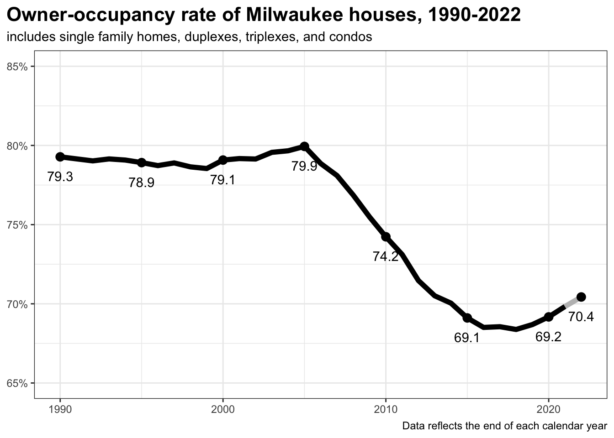

2 Owner occupancy rates
2.1 Citywide
Owner-occupancy reached a modern high in 2005, when about 80% of Milwaukee’s houses were home to their owner.1 That fell precipitously for over a decade thereafter, reaching a low of about 68% in 2018. Then, the city finally turned the corner on the long housing crisis. Each year since 2018 has seen sustained growth in owner occupancy. Owner occupancy now stands at 70%. There are 3,010 more owner-occupied houses in Milwaukee now than at the end of 2018.
1 Owner-occupancy is determined by comparing the address to which the City sends the property tax bill with the address(es) at the property in question. In the case of multi-unit homes, like a duplex or triplex, an owner-occupied household may also contain renting households.
Owner-occupancy has always been highest for single family homes, followed by condos, then duplexes and triplexes. Each category followed a similar trajectory of steep declines until the mid or late 2010s, followed by a recent recovery.
Single family homeownership grew by 1,550 or 1.7% of all homes since 2018.
Condo homeownership grew by 340 or 2.7 percentage points.
Duplex homeownership grew by 1,040 or 3 percentage points.
Triplex+ homeownership grew by 80 or 2.2 percentage points.

| Owner occupancy rates by property type | ||||||
| City of Milwaukee, selected years | ||||||
| parcels | owner occupied | by property type | ||||
|---|---|---|---|---|---|---|
| condo | duplex | single family | triplex+ | |||
| 1990 | 133,632 | 79.3% | 77.8% | 58.0% | 90.2% | 32.9% |
| 1995 | 132,418 | 78.9% | 79.6% | 56.7% | 89.7% | 34.3% |
| 2000 | 131,567 | 79.1% | 79.0% | 57.6% | 89.4% | 34.0% |
| 2005 | 134,276 | 79.9% | 81.3% | 59.1% | 89.6% | 35.4% |
| 2010 | 136,840 | 74.2% | 72.9% | 52.4% | 84.8% | 30.1% |
| 2015 | 135,136 | 69.1% | 70.4% | 46.5% | 78.9% | 24.2% |
| 2016 | 134,969 | 68.5% | 71.0% | 45.8% | 78.2% | 23.0% |
| 2017 | 134,746 | 68.6% | 71.9% | 45.7% | 78.1% | 22.7% |
| 2018 | 134,742 | 68.4% | 72.4% | 45.7% | 77.8% | 23.5% |
| 2019 | 134,958 | 68.7% | 71.8% | 46.5% | 78.0% | 24.5% |
| 2020 | 135,048 | 69.2% | 72.9% | 46.9% | 78.5% | 25.3% |
| 2021 | 134,927 | 69.8% | 74.0% | 47.8% | 79.0% | 25.7% |
| 2022 | 135,069 | 70.4% | 75.0% | 48.6% | 79.5% | 25.7% |
| 2022 data contains records through mid-September | ||||||
2.2 By Aldermanic District
Owner-occupancy has increased in each of the city’s 15 aldermanic districts, relative to 2018. 2
2 Aldermanic districts are a useful way to compare trends within the city because they divide the population into 15 equal chunks. Of course, this doesn’t translate to equal numbers of houses because the mix of single family homes, apartment buildings, and duplexes varies between districts. This report exclusively uses the aldermanic district boundaries drawn after the 2022 census.
The largest raw increase in the number of owner-occupied houses occured in the 10th and 5th districts, along the west and northwest fringe of the city. Compared to 2018, there are now 351 more owner occupiers in the 5th and 275 in the 10th. Combined, the share of owner-occupied homes in this part of the city has risen by 2.9 percentage points–from 76.6% in 2018 to 79.5% in 2022.
The 6th, 7th, and 15th districts–which make up the near northern core of the city–saw a cumulative increase of 683 more homeowners. This is a 2.1 percentage point increase in the share of houses occupied by a homeowner.
The largest proportional increases came in the 3rd (East Side) and 4th (downtown) districts. Together, they added 423. The owner-occupied share has grown 3.8 percentage points–from 66% in 2018 to 69.8% in 2022.
Bay View and neighboring parts of the south side are covered by the 14th district. Here, homeownership increased by 198, or 1.8 points.
Homeownership grew by 377 (or 1.7% of the housing stock) on the far south and southwest sides (the 11th and 13th districts).
Homeownership grew the least on the near south side. The 12th district, in particular, saw almost no growth in owner-occupancy at all.

| Owner occupancy of houses in Milwaukee's Aldermanic Districts, 2018 - 2022 | ||||||
| parcels | share | shift '18 to '22 | ||||
|---|---|---|---|---|---|---|
| 2018 | 2022 | 2018 | 2022 | parcels | share | |
| 1st | 5,714 | 5,876 | 55.1% | 56.5% | 162 | 1.4% |
| 2nd | 6,064 | 6,268 | 64.5% | 66.6% | 204 | 2.0% |
| 3rd | 4,290 | 4,553 | 65.1% | 69.0% | 263 | 3.9% |
| 4th | 2,481 | 2,641 | 67.6% | 71.1% | 160 | 3.5% |
| 5th | 9,248 | 9,599 | 80.2% | 83.2% | 351 | 3.0% |
| 6th | 4,350 | 4,555 | 49.4% | 51.4% | 205 | 1.9% |
| 7th | 6,018 | 6,259 | 55.0% | 57.1% | 241 | 2.1% |
| 8th | 4,877 | 4,996 | 68.4% | 70.1% | 119 | 1.7% |
| 9th | 6,360 | 6,556 | 73.1% | 75.0% | 196 | 2.0% |
| 10th | 7,377 | 7,652 | 72.5% | 75.2% | 275 | 2.7% |
| 11th | 9,994 | 10,200 | 87.8% | 89.6% | 206 | 1.8% |
| 12th | 3,576 | 3,594 | 55.2% | 55.5% | 18 | 0.2% |
| 13th | 9,201 | 9,372 | 89.0% | 90.6% | 171 | 1.6% |
| 14th | 8,958 | 9,156 | 78.3% | 80.1% | 198 | 1.8% |
| 15th | 3,628 | 3,865 | 46.5% | 48.9% | 237 | 2.4% |
| 2022 data contains records through mid-September. | ||||||


2.3 Neighborhoods
Thirteen neighborhoods saw at least 5% of their total housing stock become owner occupied from 2018 to 2022.3 They are Brewer’s Hill (+8%), Florist Highlands (+7%), Juneau Town (+5%), Lenox Heights (+6%), Lower East Side (+5%), Maple Tree (+5%), Martin Drive (+8%), Miller Valley (+7%), Murray Hill (+5%), Riverside Park (+8%), Riverwest (+5%), Southgate (+5%), and Yankee Hill (+6%).
3 This list is limited to neighborhoods with at least 100 residential properties. Throughout this report the neighborhoods identified by the City’s Neighborhood Identification Project are used. See here for an official map.
Notably, this list includes neighborhoods from across the city, but there are still clear regional patterns. Murray Hill, Riverside Park, and Yankee Hill are all on the east side with Brewer’s Hill and Riverwest just across the river. Martin Drive and Miller Valley are on the near west side. Lenox Heights, Florist Highlands, and Maple Tree are on the north and northwest sides. Of the entire south side, only Southgate makes this list.
No neighborhoods of at least 100 houses saw a loss of owner occupancy exceeding 4%. In fact, only 3 neighborhoods saw a double digit decline in total owner-occupied parcels. Those neighborhoods are Franklin Heights (-38), Lincoln Village (-20), and Mill Valley (-10).

2.4 Homeownership by race
The recent increase in owner-occupancy was driven by an active housing market. The City of Milwaukee saw 6,655 originated home mortgages in 2021, up from 4,863 in 2018.4
4 Mortgage statistics are calculated from the Home Mortgage Disclosure Act dataset maintained by the Consumer Financial Protection Bureau.
Owner-occupancy grew by 566 in 2019, 714 in 2020, 805 in 2021, and by 921 just through September 2022.
As discussed above, some amount of this growth reached most of the city, but that doesn’t necessarily mean it benefited all racial or ethnic groups in anything approaching equal measure. The housing crisis had a vastly more negative affect on Black Milwaukeeans overall than white residents. The share of Black households who were owner-occupiers fell from 36% in the late 2000s to 25% in the late 2010s.5 The share of non-Hispanic white households who were owner-occupiers fell from 60% to 56%.
5 In current Census Bureau parlance, “householder” “refers to the person (or one of the people) in whose name the housing unit is owned or rented (maintained) or, if there is no such person, any adult member, excluding roomers, boarders, or paid employees. If the house is owned or rented jointly by a married couple, the householder may be either the husband or the wife.”
| Share of households which are owner-occupiers | |||||
| by race or ethnicity of the householder | |||||
| Total | Black | White | Hispanic or Latino | Asian | |
|---|---|---|---|---|---|
| 2005-09 | 48.6% | 35.6% | 59.5% | 39.9% | 46.1% |
| 2010-14 | 43.0% | 30.5% | 56.1% | 35.9% | 39.6% |
| 2016-20 | 40.7% | 25.2% | 55.8% | 38.5% | 39.9% |
| Data is from the American Community Survey. The universe of households includes those living in apartment buildings. | |||||
This report is primarily based on parcel data, which does not include demographic information about owners or residents. Still, the trends are stark. Majority black neighborhoods saw massive drops in owner-occupancy. In 2006, 73.6% of houses in majority Black wards were owner-occupied, compared to 85.7% in majority non-Hispanic white wards. By 2018, that had fallen to 57.9% in majority Black wards and 80.5% in majority white ones. The owner-occupancy rate of houses in majority Hispanic or Latino wards fell from 73.3% in 2006 to 63.6% in 2018.
Since 2018, growth has occured across Black, white, and Hispanic majority wards alike, but the largest proportional growth is among mostly white wards (+2.2 percentage points), followed by Black-majority wards (+1.9), and majority Hispanic wards (+1.4).
| Owner-occupied houses by racial or ethnic majority group | ||||||
| in City of Milwaukee wards | ||||||
| Black | White | Hispanic or Latino | ||||
|---|---|---|---|---|---|---|
| pct1 | parcels | pct1 | parcels | pct1 | parcels | |
| 2006 | 73.6% | 43,477 | 85.7% | 39,129 | 73.3% | 11,701 |
| 2010 | 67.0% | 39,710 | 83.1% | 39,263 | 68.8% | 10,981 |
| 2014 | 60.9% | 35,367 | 80.6% | 37,955 | 65.6% | 10,336 |
| 2018 | 57.9% | 33,411 | 80.5% | 37,859 | 63.6% | 9,995 |
| 2022 | 59.8% | 34,683 | 82.7% | 38,990 | 65.0% | 10,192 |
| 2011 wards are used, with demographics drawn from the 2020 census. | ||||||
| 1 Share of all houses which are owner-occupied | ||||||
Of course, an increase in owner-occupancy in neighborhoods with majority Black residents does not necessarily mean that Black owner-occupancy has increased. Non-Black residents could be making up that difference. We do not currently have recent enough Census Bureau data to measure the latest increases in owner-occupancy. But most mortgage applications do contain self-reported data about the race of the applicants.6 The following table shows those trends since 2018.
6 Race or ethnicity is not available in about 10% of cases.
Several things stand out. One is the remarkable increase in total mortgages beginning in 2020. In 2019, 4.3% more mortgages were originated than the previous year. That increased by 12.7% in 2020 and a further 16.4% in 2021.
The racial gap between mortgage recipients is enormous. In the latest census data, there were 1.1 white adults in Milwaukee for every 1 Black adult. In 2018, white mortgage recipients outnumbered Black ones by 3.6 to 1 in the City of Milwaukee. Black mortgage recipients did narrow the gap over the next few years. From 2018 to 2021, the number of Black people receiving a mortgage grew by 93%, while the number of white recipients grew by 36%. Put differently, the ratio of white-to-Black mortgage recipients fell from 3.6 in 2018 to 2.9 in 2019, 2.5 in 2020, and 2.1 in 2021.
Census records show a ratio of 2.2 white adults for every Hispanic or Latino adult. In 2018, there were 3.9 white mortgage recipients for every Hispanic one, falling to 3.8 in 2019, 3.7 in 2020, and 3.4 in 2021.
Asians, by contrast, were slightly more likely to receive mortgages. Census records show a ratio of 8.2 white adults for every Asian adult. In 2018, there were 7.6 white mortgage recipients for each Asian one, falling to 7.2 in 2019, rising to 8 in 2020, and falling again to 6.7 in 2021.
| Originated home mortgages in the City of Milwaukee | ||||||||||||||
| by self-reported race | ||||||||||||||
| total | White | Black | Hispanic | Asian | Other/Joint | Not Available | ||||||||
|---|---|---|---|---|---|---|---|---|---|---|---|---|---|---|
| count | pct1 | count | pct1 | count | pct1 | count | pct1 | count | pct1 | count | pct1 | count | pct1 | |
| 2018 | 4,863 | - | 2,549 | - | 704 | - | 653 | - | 334 | - | 187 | - | 436 | - |
| 2019 | 5,073 | 4.3% | 2,505 | −1.7% | 858 | 21.9% | 652 | −0.2% | 346 | 3.6% | 193 | 3.2% | 519 | 19.0% |
| 2020 | 5,716 | 12.7% | 2,719 | 8.5% | 1,075 | 25.3% | 742 | 13.8% | 342 | −1.2% | 253 | 31.1% | 585 | 12.7% |
| 2021 | 6,655 | 16.4% | 2,906 | 6.9% | 1,358 | 26.3% | 864 | 16.4% | 432 | 26.3% | 306 | 20.9% | 789 | 34.9% |
| Data source: Consumer Financial Protection Bureau, Home Mortgage Disclosure Act dataset. | ||||||||||||||
| 1 Percent change since the previous year | ||||||||||||||
In general, non-white Milwaukeeans are still underrepresented in the homebuying market, and this is especially acute for Black residents. Nonetheless, the hot housing market of the past few years has cut into this gap. Collectively, the number of Black, Latino, and Asian mortgage recipients grew by 57% from 2018 to 2021, compared to 14% among white mortgage recipients.